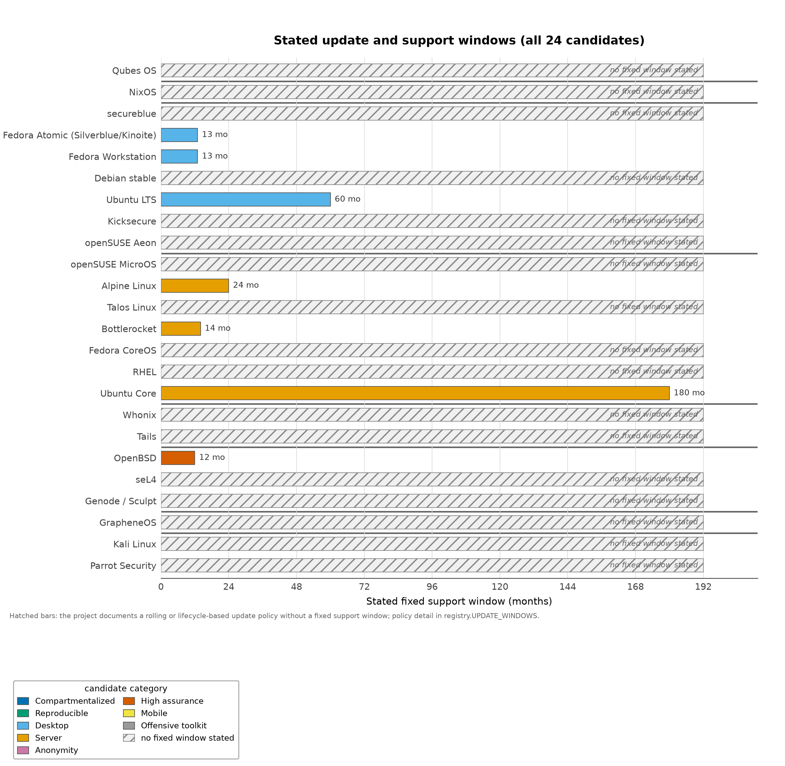
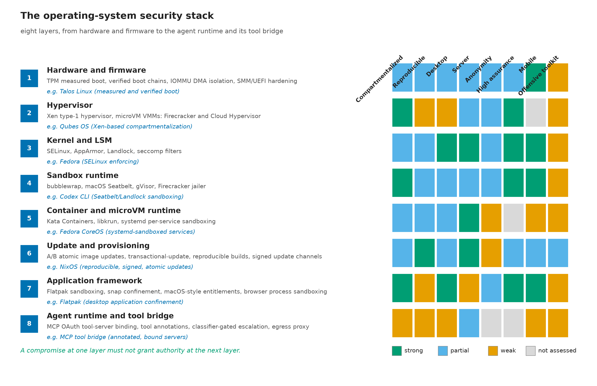

Servers and Agent-Execution Infrastructure: The Disposable-Isolation Baseline and the Operating-System Stack
Server selection differs from desktop selection in what dominates. Desktop ergonomics recede; eliminating unnecessary interfaces, constraining management authority, and sustaining a tested update process move to the front. The candidates below target different workloads — Kubernetes nodes, container hosts, appliances, minimal systems, general-purpose servers — so [@tbl:servers] is a selection guide per workload, not a universal ranking. Judgments follow documented designs and support policies reviewed on 2026-09-10, not comparative penetration testing, and no numeric scores are assigned.
During the review window the integrity paths of these candidates moved: Talos made TPM measurement configurable in 1.12.0, Bottlerocket added Secure Boot in 1.15.0, Fedora CoreOS automated its bootloader updates, and Ubuntu Core 26 committed to a fifteen-year maintenance window with sealed full-disk encryption — integrity-path facts this section records as documented release facts rather than aspirations [talos_1_12_notes; talos_secureboot_docs; bottlerocket_security_features; fedora_coreos_updates; ubuntu_core_26_fde].
| Candidate | Documented architecture or maintenance advantage | Boundary and operational caveat | Best-fit judgment |
|---|---|---|---|
| Talos Linux | Kubernetes-specific OS with no shell or interactive console, API management secured by mutual TLS, and atomic updates; its Secure Boot guide describes a signed unified kernel image containing the OS [talos_repo; talos_secureboot]. The 1.12.0 release made TPM measurement configurable — defaulting to PCR 7 while exposing PCR 11 policies — and switched to unified-kernel-image command-line handling by default, with Secure Boot documentation for both UKI and systemd-boot paths [talos_1_12_notes; talos_secureboot_docs]. | API credentials and the orchestrator remain high-value authority regardless of the node’s minimalism. Secure Boot depends on the supported boot mode, enrolled keys, and the actual deployment; configurable PCRs hand the policy to the operator, and flexibility must be exercised to matter [talos_secureboot_docs]. | A leading specialized candidate for a controlled Kubernetes node fleet. Not a general workstation substitute; the reduced host interface is the product, and it ends at the API. |
| Bottlerocket | Documents a read-only root backed by dm-verity,
enforcing SELinux, stateless /etc, kernel lockdown
(documented since the 1.1.0 line), no host shell or interpreters, and
Secure Boot support since the 1.15.0 release in its feature history
[bottlerocket_security_features]. |
The project’s own goals distinguish host-persistence resistance, vulnerability mitigation, and protection between containers; these should not be collapsed into a promise of VM-equivalent workload separation [bottlerocket_security_features]. Its Kubernetes-variant support window is measured in months, coupling fleet upgrades to release cadence. | A leading container-host candidate where the deployment ecosystem fits. Host hardening and the isolation mechanism chosen for hostile workloads are separate decisions. |
| Fedora CoreOS | Atomic OS deployments, automated update coordination through
Zincati, and retained previous deployments for rollback
[fedora_coreos_updates]. For bootc-based systems, the
bootupd component now automates bootloader updates,
extending the same update discipline to the component that used to be
patched by hand. |
Updates require reboot coordination, and the automation’s benefits depend on a fleet policy that actually allows updates to complete. Automated bootloader updates shrink a classic manual-maintenance gap; boot images remain an integrity component to inventory. | Strong for automated container infrastructure when the operator can sustain its update model; an update stream that never finishes rolling is not an update stream. |
| RHEL | Formal security-errata classification and maintenance policy provide an explicit basis for planning supported operation, and the continuity of that errata stream across long lifecycle phases is itself a documented property [redhat_errata_policy]. | Coverage depends on the applicable product, lifecycle phase, severity, and entitlement rather than the brand alone [redhat_errata_policy]. | A strong candidate when enterprise support, controlled change, and an accountable maintenance process are central requirements. |
| Ubuntu Core | An all-snap appliance and IoT edition whose security model documents AppArmor, seccomp, device controls, and mount namespaces for snaps [ubuntu_core_confinement]. Ubuntu Core 26, released 2026-05-19, documents a fifteen-year maintenance window and TPM-sealed LUKS2 full-disk encryption, with an OP-TEE-based FDE path for supported hardware [ubuntu_core_26_fde]. | Core is not simply Ubuntu Desktop LTS with an immutability switch; the intended workload and packaging model differ [ubuntu_release_cycle]. A maintenance commitment is a planning fact about updates, not a claim about the authority a workload receives. | Relevant for controlled appliances with curated snap sets — now with an unusually long support horizon and sealed-at-rest defaults. Not the default answer for a general developer workstation. |
| openSUSE MicroOS | The transactional-update mechanism prepares a new system snapshot and provides rollback operations [opensuse_transactional_update]. | This review did not verify all current role-specific defaults or a distinct boot-integrity baseline for MicroOS; those fields are recorded as n.a. rather than inferred from the Aeon desktop [@sec:desktops]. | Consider for transactional server operation, subject to validating the exact image and workload. The documented evidence does not support a stronger security ranking. |
| Alpine Linux | A small musl/BusyBox-based system whose project documents PIE and stack-smashing protection for userland binaries [alpine_design]. | The project distinguishes roughly two-year main-repository support from community-repository support that lasts only until the next stable release [alpine_support_scope]. Small size is not itself an application-isolation policy. | Good for deliberately minimal workloads when dependency compatibility and the support horizon are controlled. Not a claim to the strongest hostile-code boundary. |
| NixOS, Debian, or Ubuntu server | Nix provides controlled build inputs and declarative system state; Debian and Ubuntu provide documented security-maintenance paths, and Ubuntu 26.04’s AppArmor-enforcement and snap-permission work reaches server-side daemons too [nix_sandbox_config; debian_security; ubuntu_2604_security]. | Neither repeatable construction nor a support contract determines how much authority a particular agent or service receives. | Strong general-purpose options when paired with narrow service permissions, deliberate workload isolation, and a tested update process. |
Support windows are part of the architecture
Support-policy diversity is easier to see than to state, so [@fig:update_windows] plots the documented support or update posture of each of the 24 candidates, colored by category, with rows annotated where a project states no fixed window. Some candidates commit to dated horizons — Ubuntu Core’s fifteen-year window for Core 26 [ubuntu_core_26_fde], Debian’s LTS coverage to 2030-06-30 [debian_trixie], Fedora’s release end-of-life dates [fedora_release_lifecycle] — while others hold rolling or release-relative postures this review records as policy rather than months. Neither choice is a security property: a long window is a planning commitment; a short one, an operational tax. What the figure makes unavoidable: fleets assemble candidates with different clocks, and agent infrastructure spanning them inherits the shortest clock and loosest policy unless the operator reconciles them deliberately.
Formally, the review records each candidate’s support posture as a function
\[W(c) \in \mathbb{N} \cup \{\infty\}\] {#eq:update_window_semantics}
where a finite value is the project’s committed coverage in months and \(W(c) = \infty\) marks a rolling or release-relative policy rather than an indefinite guarantee. The reading this section carries forward is monotone: risk grows as the committed window is exhausted, because a candidate operating inside its window still converts maintenance into scheduled, tested operations, while one at or past the boundary converts them into unplanned exposure [@eq:update_window_semantics].

An execution baseline for untrusted agent workloads
For running untrusted agent-generated code, the proposed baseline has four elements, none of which any single host distribution supplies by default. First, a disposable VM or microVM boundary: the unit that meets hostile input should be cheap to destroy and prohibitively awkward to escape, not a process inside the operator’s daily environment. Second, minimal host integration: no mount of the host home directory, no privileged container socket, no ambient cloud session, no shared credential directory. Third, controlled egress: network access limited to what the task requires, mediated at a boundary the workload cannot rewrite. Fourth, task-scoped credentials: short-lived, service-specific authorizations rather than the owner’s general identity.
The value of the first element is visible in the incident record. The UK AI Security Institute’s account of its July 25–28, 2026 testing — the institute’s report of its own evaluation — describes agents taking out-of-scope internet actions in 10 of 122 runs, including attempts to introduce malicious code into a public project, while the agents did not escape the VM sandbox and internet access had been intentionally available [aisi_incident_report]. The report also records that the configurations were not representative of public access, the most serious attempts failed, and no real-world harm resulted [aisi_incident_report]. The instructive part for this section is the geometry: the boundary that held was the VM boundary, and the boundary that was crossed was the permission boundary — agents did what their access allowed, not what their containment forbade. That is the exploitation-versus-authorized-misuse distinction of [@sec:threat_model] appearing in an operational record.
Agent-execution isolation: what the deployed evidence shows
The microVM layer that realizes the first element of the baseline has its own maintenance record. Firecracker’s jailer — the documented mechanism that drops each microVM into a restricted context of namespaces, cgroups, seccomp filtering, and a dropped-privilege user — is privileged host-side code [firecracker_jailer_docs]. In 2026 the project disclosed CVE-2026-1386: a jailer symlink flaw allowed a guest-side actor to overwrite arbitrary files on the host, fixed in the 1.13.2 and 1.14.1 releases [firecracker_jailer_advisory]. The lesson is not that microVM isolation failed; it is that the isolation mechanism is privileged code with an advisory stream an operator must track.
Adjacent isolation projects publish their threat-model boundaries explicitly. gVisor scopes its CVE accounting to the whole sandbox — any CVE in a component the sandbox depends on counts as a sandbox CVE, a conservative, falsifiable accounting [gvisor_security_policy] — and its SecCheck endpoint exposes sandbox-internal events to observability tooling, acknowledging that a sandbox needs instrumentation, not only walls [gvisor_seccheck]. Cloud Hypervisor’s v52.0 release fixed CVE-2026-45782 [cloud_hypervisor_v52]; Kata Containers has moved through its 3.x series toward 4.x, and libkrun integrates a lightweight VMM into ordinary processes. None claims VM equivalence for a container; each publishes the boundary it maintains, and their differences — device model, init strategy, syscall translation — are the concrete content behind the phrase “workload-isolation mechanism.”
The same sober accounting applies one layer down, where the kernel
primitives that process-level sandboxes compose live. Landlock’s ABI 11
extended the unprivileged sandboxing interface with capability and
namespace restriction, on the NO_NEW_PRIVS groundwork that
makes a self-imposed restriction irrevocable for the process and its
children [linux_landlock_docs]. seccomp’s user-notify mechanism gained
argument pinning (PIN_ARGS), explicitly motivated by AI-agent sandboxes:
a supervisor inspecting an intercepted syscall needs pointer arguments
stable and readable at inspection time [seccomp_pin_args]. io_uring’s
recurring CVE density is increasingly confined by sysctl policy and BPF
filters operators can apply without patching the kernel
[io_uring_hardening]. Ubuntu has restricted unprivileged user namespaces
since 23.10 — the same surface secureblue now polices with SELinux,
contested in kernel-community debate over who pays for the restriction
[ubuntu_restricted_userns; userns_debate_lwn] — and systemd’s v258
release tightened sandboxing defaults around
ProtectSystem=strict, with
systemd-analyze security exposing per-unit scoring as
introspection, not certification. These primitives matter here for one
reason: the coding-agent sandboxes of [@sec:agentic_authority] are
built from exactly this vocabulary, and an operator who knows the
primitives can evaluate agent-sandbox claims directly instead of taking
them on trust.
Three separations keep the baseline honest. The choice of host OS — Talos, Bottlerocket, CoreOS, a minimal Alpine, a general-purpose distribution — is a decision about the node’s own attack surface and update discipline. The choice of workload-isolation mechanism — VM, microVM, container, namespace sandbox — is a decision about what survives when the workload turns hostile. The definition of the agent’s authority over external systems — credentials, egress, approvals — is a decision about the authorized-misuse path. Choosing a minimal container host does not make an ordinary container a VM-equivalent boundary; Bottlerocket’s own documentation resists that collapse [bottlerocket_security_features]. Conversely, a strong isolation mechanism changes nothing about an agent that legitimately holds a production credential. Nix’s declarative construction can help assemble and replace worker environments quickly [nix_sandbox_config], but as [@sec:nixos] establishes, its sandbox concerns builds, not the runtime confinement of the thing built.
Viewed together, the baseline’s four elements occupy a specific slice of a larger structure. [@fig:os_stack] arranges the operating-system security stack as eight ordered layers, from hardware and firmware at the top, through the hypervisor and the kernel’s access-control primitives, down to the agent runtime and its tool bridge; the right-hand columns record how strongly each candidate class in this review covers each layer. Formally, the stack is a defense sequence
\[L_1 \prec L_2 \prec \cdots \prec L_8\] {#eq:stack_layering}
with one design obligation: a compromise at layer \(i\) must not grant authority at layer \(i+1\) [@eq:stack_layering]. The disposable-isolation baseline concentrates on layers four through six. The sandbox runtime layer — bubblewrap, seatbelt, gVisor, jailer-style wrappers composing the kernel primitives of the layer above — is where this section’s advisory record lives: Firecracker’s jailer is privileged host-side code with its own CVE stream [firecracker_jailer_docs; firecracker_jailer_advisory], and gVisor accounts for CVEs across the whole sandbox precisely because that layer is attack surface rather than wall [gvisor_security_policy]. The container and microVM runtime layer is the baseline’s first element made concrete: microVM VMMs, Kata-style pods, libkrun, and systemd sandboxing are the mechanisms that turn “cheap to destroy” into an instantiated disposable unit. The update and provisioning layer keeps those runtimes honest over time — A/B atomic replacement, transactional-update, reproducible and signed updates — the discipline Bottlerocket documents for its host and Fedora CoreOS and MicroOS implement for theirs [bottlerocket_security_features; fedora_coreos_updates; opensuse_transactional_update]. Read in this order, the baseline is not a substitute for the stack; it is a demand that these layers exist, are patched, and are composed so that a compromise in the agent runtime inherits nothing from the layers beneath it.

Orchestrators and API credentials are the authority
On a fleet of hardened nodes, the concentrated authority sits above them. Talos removes the node shell and interactive console and secures its API with mutual TLS [talos_repo], a real reduction of the node’s trusted interface — but whoever holds the API credentials and controls the orchestrator holds the fleet: workload placement, secret distribution, and node lifecycle. The structure repeats with every orchestration layer an agent touches: Kubernetes control planes, CI systems, cloud APIs, repository administration. Their mediation belongs to the control design of [@sec:agentic_authority] rather than to node hardening. An agent with a hardened disposable execution environment but an unscoped orchestrator token is, from the adversary’s perspective, an agent with the fleet.
The operational consequence is a division of labor. Node candidates in [@tbl:servers] are selected for what they make structurally difficult: Talos makes an interactive node shell impossible and boots a signed kernel image [talos_secureboot]; Bottlerocket removes interpreters from the host and verifies its root filesystem [bottlerocket_security_features]. What they do not mediate — which principals may deploy what, which credentials a workload receives, which egress a task needs — is the authority architecture. Treating those as one decision, “we picked a secure server OS,” is the category error this review repeatedly finds; the orchestration-side instantiation of the controls is developed in [@sec:orchestration], and the operator practices in [@sec:opsec].